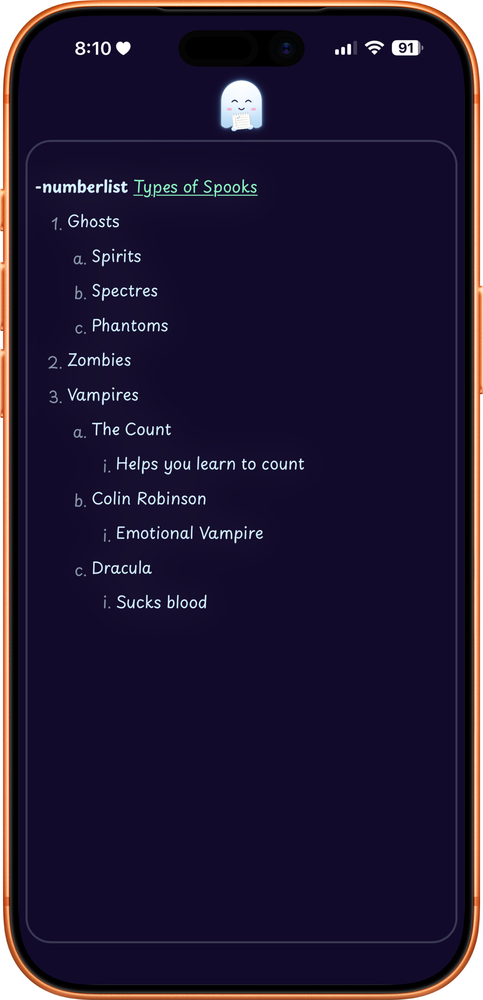

Things I've built
A few of the projects I've worked on, take a look and make your own opinion.


JuiceBox
My most ambitious side project, built after buying my first EV and wanting to track running costs properly. What started as a personal tool grew into a published App Store app with nearly 200 downloads and paying subscribers. Now on version 1.2, with features including OCR scanning of public charger screens, CSV/JSON data import, battery health estimation, an Apple Watch companion app, and bespoke machine learning models to perform predictions.
Technologies
- Xcode
- SwiftUI
- SwiftData
- Core ML
- CloudKit
- RevenueCat
- FeaturePulse
- PostHog
Features
- Simple and clean UI
- Suite of tools to help EV owners estimate charge times and costs
- Charts and graphs to track usages and costs overtime
- Custom light and dark themes
- Live news section to deliver development updates to users
- iCloud sync and backup across Apple devices
- Apple Watch companion app
- Calculate estimated battery health and usable capacity





Wisppad
A notes app built around the idea of impermanence. Notes automatically delete after a set time, keeping things from accumulating. Inspired by my own habit of piling up forgotten notes while building JuiceBox. Wisppad supports a range of note types including maths, code snippets, checklists, voice, handwriting, and camera OCR. Notes that are approaching deletion visibly fade out before wisping away. Users can pin notes indefinitely by pinching them, though Wisp, your in-app companion, won't be pleased about it.
Technologies
- Xcode
- SwiftUI
- SwiftData
- PencilKit
- CloudKit
- RevenueCat
- PostHog
Features
- Gesture based UI. Pinch and swipe notes
- Keyword based activation for note types
- Custom note timers for individual notes
- Maths notes include dynamic variables, inline expression solving and unit conversions
- Live news section to deliver development updates to users
- iCloud sync across Apple devices
Other Stuff
A few other projects either during university, old projects I worked on or sub-projects.
University Project
My final year project: an iOS app that identifies mobile vulnerabilities and reports them to the user - combining mobile development and cyber security. It checks for weak passwords, unsecured WiFi and open ports, connected Bluetooth devices, and scans files for potentially malicious content.
Technologies
- Visual Studio
- Xamarin.iOS in C#
- UIKit
- CloudKit
- CoreBluetooth
- MobileCoreServices
Features
- Password strength checker
- Internet port scanner
- File checker
- Bluetooth scanner
- Safety education page
Where's Wally?
My second year Object Oriented Programming assignment: used to apply OOP principles to programmatically find Wally in a black and white image. The program cross-references the pixel values of a Wally reference against the scene, then outputs the scene with Wally's likely location shaded.
Technologies
- Visual Studio
- C++
- 2D Matrices
- Polymorphism
Features
- Outputs image locating Wally
- Where's Wally facts